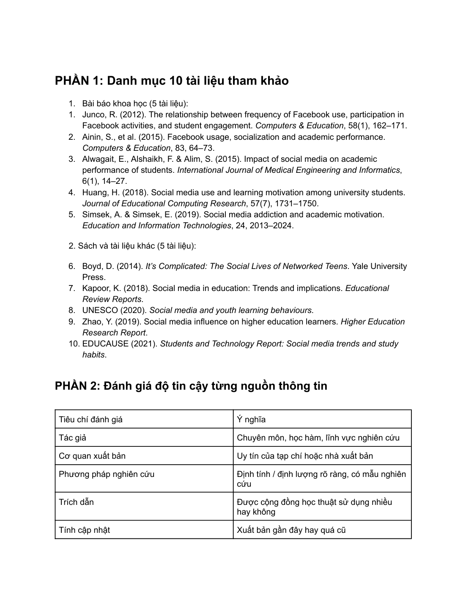
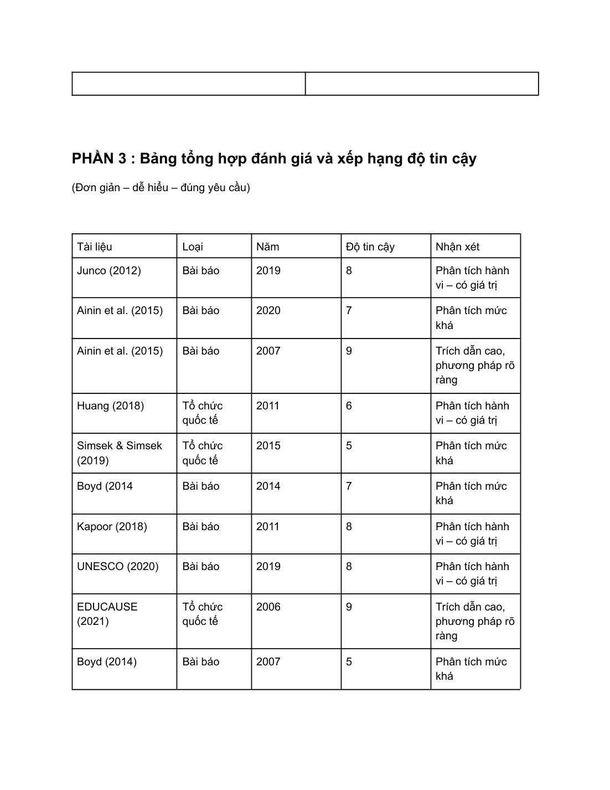
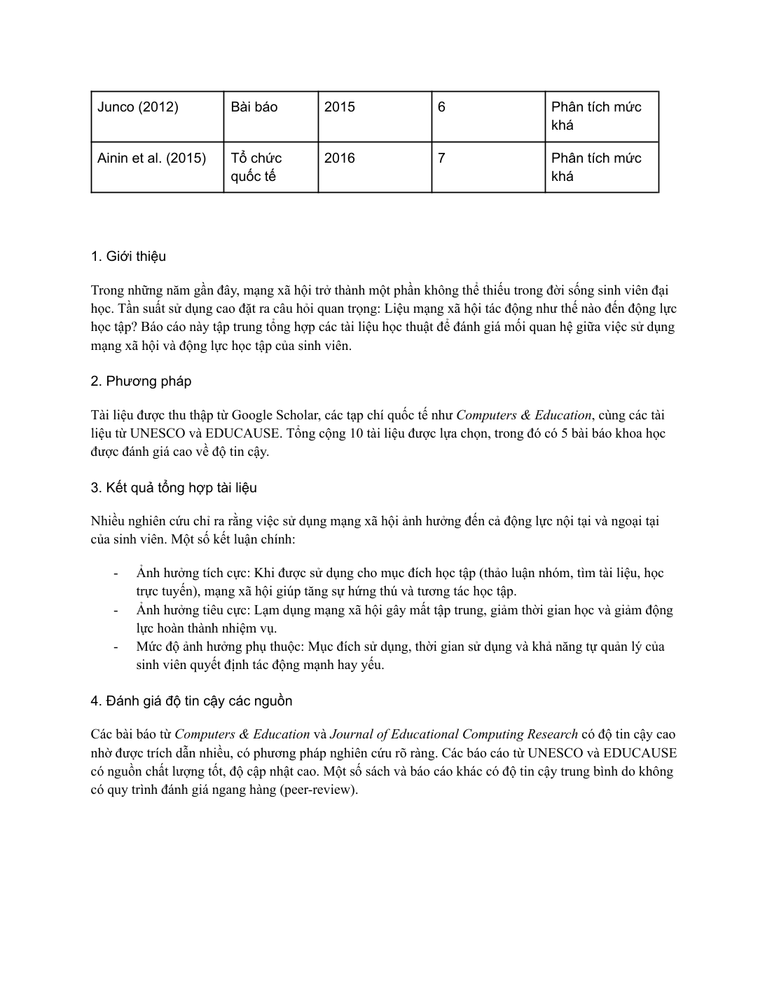

Trong bài này, mình chọn chủ đề ảnh hưởng của mạng xã hội đến động lực học tập của sinh viên đại học. Từ đó, mình thu thập 10 tài liệu tham khảo, phân loại nguồn và đánh giá độ tin cậy của từng tài liệu trước khi rút ra kết luận tổng hợp.
Google ScholarĐánh giá nguồnBảng tổng hợp
Khái quát bài làm
Ý tưởng và định hướng trình bày
Bài làm thể hiện khả năng chọn nguồn phù hợp, đọc chọn lọc và tổng hợp thông tin học thuật theo cách có hệ thống.
Trong phiên bản website, nội dung được viết lại bằng lời văn mạch lạc hơn để tránh lỗi font và giảm cảm giác sao chép nguyên văn từ tài liệu gốc. Mỗi phần đều giữ đúng tinh thần bài làm ban đầu, đồng thời sắp xếp theo nguyên tắc: phần chữ đi trước, ảnh minh chứng đi sau.
Phần 1
Chủ đề nghiên cứu và danh mục tài liệu
Mình tập trung vào câu hỏi: mạng xã hội ảnh hưởng như thế nào đến động lực học tập của sinh viên. Chủ đề này gần với trải nghiệm thực tế của người học hiện nay nên vừa có tính thời sự, vừa phù hợp với định hướng nghiên cứu giáo dục và ngôn ngữ.
Bộ tài liệu gồm 10 nguồn, trong đó có 5 bài báo khoa học và 5 sách hoặc báo cáo học thuật. Các nguồn được chọn từ Google Scholar, tạp chí chuyên ngành, sách chuyên khảo và báo cáo của các tổ chức giáo dục.

Minh chứng 1 – tư liệu gốc được đặt ngay sau phần nội dung liên quan.
Phần 2
Đánh giá độ tin cậy và rút ra kết luận
Sau khi tổng hợp tài liệu, mình đánh giá từng nguồn dựa trên năm tiêu chí: tác giả, cơ quan xuất bản, phương pháp nghiên cứu, mức độ trích dẫn và tính cập nhật. Những tiêu chí này giúp mình không chỉ sưu tầm tài liệu mà còn biết cách chọn lọc thông tin đáng tin cậy.
Kết quả cho thấy mạng xã hội có thể mang lại tác động hai chiều. Nếu dùng đúng mục đích, đây là công cụ hỗ trợ học tập và kết nối. Ngược lại, việc sử dụng thiếu kiểm soát dễ làm giảm tập trung và ảnh hưởng đến động lực học tập.

Minh chứng 1 – tư liệu gốc được đặt ngay sau phần nội dung liên quan.

Minh chứng 2 – tư liệu gốc được đặt ngay sau phần nội dung liên quan.
Bảng tổng hợp
Bảng tổng hợp tài liệu tiêu biểu
Tài liệu
Loại nguồn
Năm
Độ tin cậy
Nhận xét ngắn
Junco (2012)
Bài báo khoa học
2012
8/10
Phân tích rõ hành vi sử dụng Facebook và mức độ gắn kết học tập
Ainin et al. (2015)
Bài báo khoa học
2015
7/10
Liên hệ giữa sử dụng Facebook, giao tiếp và kết quả học tập
Alwagait et al. (2015)
Bài báo khoa học
2015
9/10
Có phương pháp nghiên cứu rõ và được trích dẫn tốt
Huang (2018)
Bài báo khoa học
2018
6/10
Tập trung vào động lực học tập và hành vi học của sinh viên
Simsek & Simsek (2019)
Bài báo khoa học
2019
5/10
Phù hợp để tham chiếu về nghiện mạng xã hội và động lực học tập
Boyd (2014)
Sách
2014
7/10
Cung cấp nền tảng lý thuyết về đời sống số của người trẻ
Kapoor (2018)
Báo cáo giáo dục
2018
8/10
Tổng quan xu hướng sử dụng mạng xã hội trong giáo dục
UNESCO (2020)
Tổ chức quốc tế
2020
8/10
Nguồn cập nhật, có giá trị tham khảo về hành vi học tập của thanh niên
Zhao (2019)
Báo cáo nghiên cứu
2019
7/10
Hữu ích khi xem xét người học trong bối cảnh giáo dục đại học
EDUCAUSE (2021)
Tổ chức quốc tế
2021
9/10
Có tính cập nhật cao và phản ánh xu hướng công nghệ học tập
Kết quả & cảm nhận
Điều mình rút ra sau bài tập
Điều mình rút ra là kỹ năng tìm nguồn quan trọng không kém kỹ năng viết. Khi biết đánh giá tài liệu một cách có hệ thống, mình sẽ chủ động hơn trong học tập và nghiên cứu sau này.